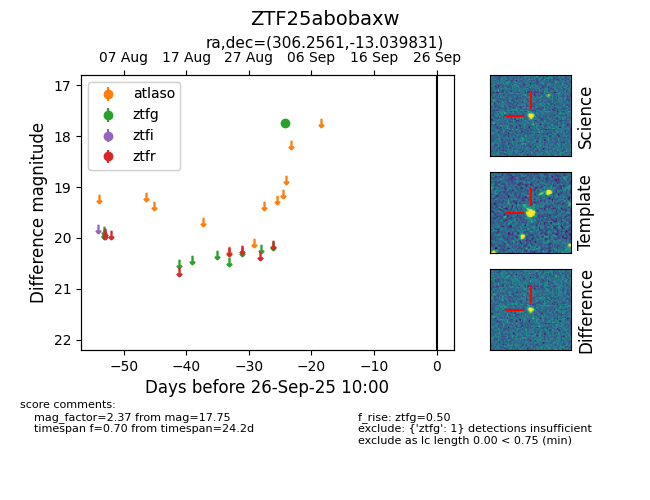

FINK: ZTF25abobaxw
Lasair: ZTF25abobaxw
ALeRCE: ZTF25abobaxw
ZTF25abobaxw (ztf,fink)
equatorial (ra, dec) = (306.2561,-13.03983)
galactic (l, b) = (31.3683,-26.56280)

last ztfg=17.75
1 ztfg detections